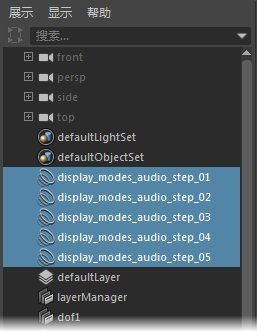

如果将声音文件导入到场景中，但稍后决定不再需要此音轨，则从“播放选项”(Playback Options)的“音量”(Volume)菜单中删除此音频文件。
若要从场景中删除音频文件，请执行下列操作之一
- 从“动画”(Animation)菜单集 (F4) 的 “音频”(Audio)菜单中展开“删除声音”(Delete Sounds)卷展栏。
- 在播放选项(Playback Options)的“音量”(Volume)
 图标上单击鼠标右键，然后展开“删除声音”(Delete Sounds)卷展栏，从中可以查看场景中保存的声音列表。选择要删除的声音。
图标上单击鼠标右键，然后展开“删除声音”(Delete Sounds)卷展栏，从中可以查看场景中保存的声音列表。选择要删除的声音。
音频文件即从场景文件中移除。
注： 如果要暂时停止播放音频，也可以禁用它或在“音量”(Volume)菜单中禁用声音。
也可以从大纲视图(Outliner)中移除声音，或使用主菜单栏上“编辑”(Edit)菜单中的命令。
